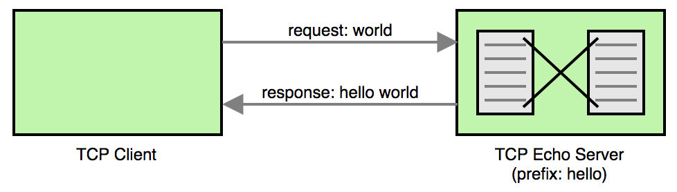
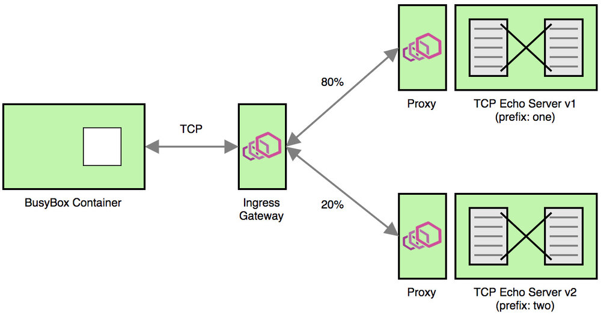

本文为翻译文章，点击查看原文。
Istio通过虚拟服务, 目标规则, Gateway等概念提供了复杂的路由机制。Istio 1.0通过加权路由定义启用了HTTP流量转移。我提交的Envoy 和Istio的pull request为TCP/TLS服务提供了类似的特性。这一特性已经在Envoy 1.8.0中发布了。Istio中的这一特性也会在即将发布的1.1.0版本中提供使用。

在本文中，我们将用Go编写的一个简单的TCP Echo服务，用Docker将其容器化并部署到Kubernetes上，并通过练习Istio的加权TCP路由特性来理解其在生产服务中的行为。
TCP Echo服务
在本文中，我们将创建一个简单的监听连接的TCP服务，并在客户端的请求数据加上一个简单的前缀，将其作为响应返回。图示如下：

让我们看一下TCP Echo服务端的Go代码：
package main
import (
"bufio"
"fmt"
"io"
"net"
"os"
)
// main作为程序入口点
func main() {
// 通过程序入参获得端口和前缀
port := fmt.Sprintf(":%s", os.Args[1])
prefix := os.Args[2]
// 在给定端口上创建tcp监听
listener, err := net.Listen("tcp", port)
if err != nil {
fmt.Println("failed to create listener, err:", err)
os.Exit(1)
}
fmt.Printf("listening on %s, prefix: %s\n", listener.Addr(), prefix)
// 监听新的连接
for {
conn, err := listener.Accept()
if err != nil {
fmt.Println("failed to accept connection, err:", err)
continue
}
// 启用goroutine处理连接
go handleConnection(conn, prefix)
}
}
// handleConnection 处理连接的生命周期
func handleConnection(conn net.Conn, prefix string) {
defer conn.Close()
reader := bufio.NewReader(conn)
for {
// 读取客户端请求数据
bytes, err := reader.ReadBytes(byte('\n'))
if err != nil {
if err != io.EOF {
fmt.Println("failed to read data, err:", err)
}
return
}
fmt.Printf("request: %s", bytes)
// 添加前缀作为response返回
line := fmt.Sprintf("%s %s", prefix, bytes)
fmt.Printf("response: %s", line)
conn.Write([]byte(line))
}
}
要测试这个程序，复制上面代码并命名为main.go，执行命令如下：
$ go run -v main.go 9000 hello
listening on [::]:9000, prefix: hello
我们可以通过 nc (Netcat)在TCP层面上和这段程序交互。要发送请求，可以使用BusyBox容器，如下所示：
$ docker run -it --rm busybox sh -c 'echo world | nc docker.for.mac.localhost 9000'
hello world
就像你看到的，在请求“world”前面加上了“hello”，“hello world”作为响应。注意，正在执行的BusyBox容器基于 Docker for Mac，这就是为什么我访问Echo服务端时用docker.for.mac.localhost代替了localhost。
容器化TCP Echo服务
因为我们最终想要在Kubernetes集群上运行TCP Echo服务，现在让我们将它容器化并发布镜像到 Docker Hub。
首先，用下面的内容创建Dockerfile：
# 使用golang容器构建可执行文件
FROM golang:1.11 as builder
WORKDIR /go/src/github.com/venilnoronha/tcp-echo-server/
COPY main.go .
RUN CGO_ENABLED=0 GOOS=linux go build -a -installsuffix cgo -o main main.go
# 负责bin文件到基于alpine的分离容器
FROM alpine:3.8
RUN apk --no-cache add ca-certificates
WORKDIR /bin/
COPY --from=builder /go/src/github.com/venilnoronha/tcp-echo-server/main .
ENTRYPOINT [ "/bin/main" ]
CMD [ "9000", "hello" ]
EXPOSE 9000
构建容器并发布镜像到Docker Hub：
$ docker build -t vnoronha/tcp-echo-server:latest .
Sending build context to Docker daemon 60.93kB
...
Successfully built d172af115e18
Successfully tagged vnoronha/tcp-echo-server:latest
$ docker push vnoronha/tcp-echo-server:latest
The push refers to repository [docker.io/vnoronha/tcp-echo-server]
b4cc76510de6: Pushed
...
latest: digest: sha256:0a45b5a0d362db6aa9154717ee3f2b... size: 949
部署TCP Echo服务到Kubernetes
服务配置
我们需要部署2个版本的TCP ECHO服务，用不同的前缀展示路由行为。创建service.yaml，用Kubernetes Service 和2个 Deployments 构建2个版本的TCP ECHO服务。
apiVersion: v1
kind: Service
metadata:
name: tcp-echo-server
labels:
app: tcp-echo-server
istio: ingressgateway # use istio default controller
spec:
selector:
app: tcp-echo-server
ports:
- port: 9000
name: tcp
---
apiVersion: extensions/v1beta1
kind: Deployment
metadata:
name: tcp-echo-server-v1
spec:
replicas: 1
template:
metadata:
labels:
app: tcp-echo-server
version: v1
spec:
containers:
- name: tcp-echo-server
image: vnoronha/tcp-echo-server:latest
args: [ "9000", "one" ] # prefix: one
imagePullPolicy: IfNotPresent
ports:
- containerPort: 9000
---
apiVersion: extensions/v1beta1
kind: Deployment
metadata:
name: tcp-echo-server-v2
spec:
replicas: 1
template:
metadata:
labels:
app: tcp-echo-server
version: v2
spec:
containers:
- name: tcp-echo-server
image: vnoronha/tcp-echo-server:latest
args: [ "9000", "two" ] # prefix: two
imagePullPolicy: IfNotPresent
ports:
- containerPort: 9000
部署Minikube
Minikube是Kubernetes本地开发的最佳工具。用下面的命令启动Minikube实例：
$ minikube start --bootstrapper kubeadm \
--memory=8192 \
--cpus=4 \
--kubernetes-version=v1.10.0 \
--vm-driver=virtualbox
Starting local Kubernetes v1.10.0 cluster...
...
Kubectl is now configured to use the cluster.
Loading cached images from config file.
安装 Istio
在撰写本文时，Istio 1.1.0还没有发布。因此我使用了Istio的 Daily Pre-Release来演示这个新特性。请参考Istio文档学习下载和配置Istio。
一旦配置完成，这里有一个完全部署Istio组件的简单方法：
$ kubectl apply -f install/kubernetes/helm/istio/templates/crds.yaml
customresourcedefinition.apiextensions.k8s.io/virtualservices.networking.istio.io created
...
customresourcedefinition.apiextensions.k8s.io/templates.config.istio.io created
customresourcedefinition.apiextensions.k8s.io/handlers.config.istio.io created
$ kubectl apply -f install/kubernetes/istio-demo.yaml
namespace/istio-system created
...
destinationrule.networking.istio.io/istio-policy created
destinationrule.networking.istio.io/istio-telemetry created
使用Istio代理部署TCP Echo服务
为了演示Istio的路由机制，我们以sidecar模式部署tcp-echo-server ：
$ kubectl apply -f <(istioctl kube-inject -f service.yaml)
service/tcp-echo-server created
deployment.extensions/tcp-echo-server-v1 created
deployment.extensions/tcp-echo-server-v2 created
通过下面的命令来验证服务运行：
$ kubectl get pods
NAME READY STATUS RESTARTS AGE
tcp-echo-server-v1-78684f5697-sv5r5 2/2 Running 0 56s
tcp-echo-server-v2-74bf9999c8-hhhf9 2/2 Running 0 56s
$ kubectl logs tcp-echo-server-v1-78684f5697-sv5r5 tcp-echo-server
listening on [::]:9000, prefix: one
$ kubectl logs tcp-echo-server-v2-74bf9999c8-hhhf9 tcp-echo-server
listening on [::]:9000, prefix: two
Istio加权TCP路由
这是本练习的最后一部分，定义VirtualService，DestinationRule和带有权重路由的 Gateway，并验证系统行为。
路由配置
创建带有两个subset的DestinationRule来代表两个版本的 TCP Echo服务。Gateway 容许流量通过端口31400访问服务。最后，VirtualService限定了80%的流量必须被路由到TCP Echo服务的v1版本，20%被路由到v2版本。
apiVersion: networking.istio.io/v1alpha3
kind: DestinationRule
metadata:
name: destination
spec:
host: tcp-echo-server
subsets:
- name: v1
labels:
version: v1
- name: v2
labels:
version: v2
---
apiVersion: networking.istio.io/v1alpha3
kind: Gateway
metadata:
name: gateway
spec:
selector:
istio: ingressgateway
servers:
- port:
number: 31400
name: tcp
protocol: TCP
hosts:
- "*"
---
apiVersion: networking.istio.io/v1alpha3
kind: VirtualService
metadata:
name: route
spec:
hosts:
- "*"
gateways:
- gateway
tcp:
- match:
- port: 31400
route:
- destination:
host: tcp-echo-server
port:
number: 9000
subset: v1
weight: 80
- destination:
host: tcp-echo-server
port:
number: 9000
subset: v2
weight: 20
部署路由配置
为了让配置生效，复制上面的配置内容并创建文件route-config.yaml，用下面的命令进行安装：
kubectl apply -f route-config.yaml
destinationrule.networking.istio.io/destination created
gateway.networking.istio.io/gateway created
virtualservice.networking.istio.io/route created
验证Istio的TCP路由行为
先来确定一下Ingress的IP：
$ minikube ip
192.168.99.100
现在可以通过Ingress发送一些请求到加权负载均衡的TCP Echo服务：
$ for i in {1..10}; do
for> docker run -it --rm busybox sh -c '(date; sleep 1) | nc 192.168.99.100 31400'
for> done
one Sat Oct 20 04:38:05 UTC 2018
two Sat Oct 20 04:38:07 UTC 2018
two Sat Oct 20 04:38:09 UTC 2018
one Sat Oct 20 04:38:12 UTC 2018
one Sat Oct 20 04:38:14 UTC 2018
one Sat Oct 20 04:38:17 UTC 2018
one Sat Oct 20 04:38:19 UTC 2018
one Sat Oct 20 04:38:22 UTC 2018
one Sat Oct 20 04:38:24 UTC 2018
two Sat Oct 20 04:38:27 UTC 2018
如你所见，大约80%的请求带有“one”前缀，剩下20%带有“two”前缀。这证明了加权TCP路由器确实生效了。
下图能让你很好地了解这个示范的情景：

清理
只需要像下面一样删除Minikube的部署：
$ minikube stop && minikube delete
Stopping local Kubernetes cluster...
Machine stopped.
Deleting local Kubernetes cluster...
Machine deleted.
总结
如本文所示，即将发布的Istio 1.1.0版本配置加权TCP路由非常容易。本文提供了构建一个加权TCP路由的思路，让你学会如何从头开始控制TCP流量。